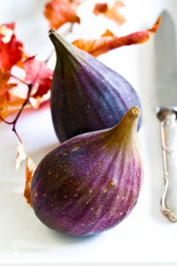

“In the west, dryness is prevalent through the desert mountains that contain a wealth of metal ore and vegetation that is pungent to the tongue. The pungent taste invigorates the lungs and opens the pores.” – The Yellow Emperor’s Classic of Medicine
As we enter the Fall season, the bright uplifting energy of summer begins to descend. We see leaves drying up and falling to the earth to be reintegrated into the soil. Animals begin to gather and bury food, preparing for the cold months ahead. As things in nature start to burrow into the ground and the cooling foods of summer are replaced by the hearty root vegetables of the earth, we’re prompted to shift our diets to prepare our bodies to store and insulate for the cooler months to come.
In Chinese medicine theory, fall is the season of the Lung, it’s corresponding element Metal, and it’s yang partner the Large Intestine. The main functions of this organ system are to move healthy qi through the body, protect us from externally contracted disease, eject any invading illness before it worsens, and separate the pure from the impure. Foods that are pungent in flavor, and often white in color, are invigorating and have the ability to disperse, thereby assisting these channels with their tasks. When we choose foods that support the organ system that is dominant in the season, we better support the smooth functioning of our body as a whole.
Supporting the Lung System/Metal Element
Within each organ system there are specific vulnerabilities, manifesting as symptoms when there is disharmony in the channels. Some dietary strategies to handle common imbalances of the Lung system are outlined below.
Dryness: In general, the fall is a dry time of year. As leaves and plants begin to dry up and turn to dust, we inevitably absorb some of this into our own bodies, creating anything from mild irritation, to full blown allergies. As our body’s first line of defense, the Lung system has a natural aversion to dryness and is the channel most deeply affected by it. Some ways that dryness might manifest in the body is dry sneezes, itchy skin, brittle hair, nosebleeds, or dry throat with cough. Some foods to help counteract dryness and support the Lung’s ability to protect the body include: pear, apple, walnuts, eggs, broccoli, brussels sprouts, cabbage, leeks, onion, mustard leaf, chive, garlic, and ginger.
Cold: In the transition months, when the weather can be drastically different from day to day, we are more vulnerable to common colds. It often begins with that first prickle of chills at the back of the neck on a windy day (wear a scarf!), and without proper care can progress into something more. Symptoms of a cold invasion include: chills, head and body aches, coughing, sneezing, and runny nose. Foods to help move the cold out more quickly and prevent it from turning into something worse include: soups, broths, porridges, stews, ginger, garlic, onion, cayenne, chili powder, cinnamon, clove, chive, fennel seed, horseradish, winter squash, lamb or mutton.
Heat: If a common cold lingers in the body too long, it begins to burrow deeper causing more severe flu-like symptoms that often manifest as heat. Some common symptoms include: fever, chills, perspiration, sore throat, cough, wheezing, thirst, constipation, and asthmatic breathing. Foods to help clear the heat include: apple, pear, persimmon, mango, celery, carrot, mushroom, asparagus, pumpkin, radish, bamboo shoots, cabbage, nori, and octopus.
Phlegm: Fall allergies, colds, and flus are often accompanied by an abundance of phlegm, congestion, and sinus pressure. Other common symptoms include: mental fogginess, chest tightness/distention, coughing, sneezing, copious mucus, and difficulty breathing. Foods to help break up phlegm include: garlic, ginger, onion, scallion, mustard/mustard greens, fennel seed, rosemary, sage, radish, seaweed, winter squash, shitake mushrooms, turnip, watercress, pear, papaya, and persimmon. Avoid foods like milk, dairy, soy, and sugar when there is a lot of mucus present.
Water Retention: The combination of erratic weather and the need to fight off attacks from external germs and allergens, can overtax the Lung system. If the qi is weak, dispersion of fluids can become compromised. This can manifest as: edema, scanty urination, shortness of breath, or chest fullness. Foods to help strengthen the lung qi and re-balance the system include: garlic, ginger, honey, barley/barley malt, rye, mustard/dandelion greens, mango, pineapple, papaya, celery, carrots, pumpkin, artichoke, asparagus, bamboo shoots, bok choy, nori, aduki beans, kidney beans, mackerel, and sardines.
Fatigue: As the days get shorter and sunshine is less abundant, it is challenging to continue to move at the pace of summer. When the body is forced to fight the rhythm of nature, the extra effort that is required can take a toll. Some common symptoms include recurring colds, weak voice, low spirit, lack of desire to communicate, sadness, or grief. Foods that can help keep us preserve the energy we have and generate the additional energy we need include: apples, pears, chicken broth, walnuts, eggs, yams, oats, artichoke, carrots, onion, radish, sweet potato, yam, mango, orange, plum, licorice, sage, thyme, honey, sesame seed, octopus, oyster, and sardines.
Supporting the Lung System’s Partner Organs/Elements
Chinese medicine treats the body holistically, viewing the channels, organs, and elements as one big integrated system working for the good of the whole. Although seasonal nuance affects our bodies in general, we all have specific patterns of imbalance that tend to arise when external factors or stresses provoke our constitutional vulnerabilities. By better understanding the checks and balances of the system, we can fine tune our diets to our bodies more specifically to support the smooth function of the whole.
Earth/Metal: In five element theory, Earth (Spleen) generates Metal (Lung). If Earth is too weak to provide the nutrients to create Metal, Metal will be weak. Concurrently, if Metal is pulling too much from Earth, Earth will become weak. This tends to manifest as excessive phlegm or mucus, digestive issues, and emotional worry or over-thinking. To support the Spleen channel/Earth element, introduce flavors that are mildly sweet (think oats – not sugar) or yellow in color, such as healthy fruits and grains, to help keep this relationship strong. Some foods that concurrently support the Lung and Spleen channels include: asparagus, broccoli, cabbage, capers, daikon, leeks, parsnip, bell pepper, radish, basil, cardamom, cinnamon, fennel, garlic, ginger, rosemary, saffron, jasmine, and peppermint.
Metal/Water: In five element theory, Metal (Lung) generates Water (Kidney), If Water pulls too much fluid from Metal, Metal will be weak. Their connection is strongly related to fluid metabolism. When there relationship is out of balance it can result in symptoms of dryness, counterflow (cough/asthma), fluid accumulation (edema), or emotional sadness or fear. To support the Kidney channel/Water element, introduce flavors that are salty, such as seaweed or shellfish. Some foods that concurrently support the Lung and Kidney include spices such as chive, garlic, and parsley.
Fire/Metal: In five element theory the Fire element (Heart) controls the Metal element (Lung). If Fire over-controls Metal, the lung qi will be weak. If Metal rebels against Fire, it will effect the heart causing a disturbance of spirit. This often manifests as anxiety, dream disturbed sleep, hot flashes, or mouth/tongue sores. To support the Heart channel/Fire element, add bitter foods such as green tea, asparagus, dandelion leaf and rhubarb, to drain some of the heat generated by overabundant fire or red foods like strawberries to calm the spirit. Some foods that concurrently support the Lung and Heart include: asparagus, broccoli, capers, scallion, turnip, watercress, basil, cardamom, marjoram, oregano, parsley, sage, thyme, and turmeric.
Metal/Wood: In five element theory, the Metal element (Lung) controls the Wood element (Liver). If Metal overacts on Wood the liver qi does not flow smoothly, causing symptoms such as menstrual irregularity or pain, headaches, depression irritability, or anger. If wood rebels against metal, it can cause respiratory issues or breathlessness. To support the Liver channel/Wood element, incorporate foods that are sour in flavor or green in color such as citrus fruit, green apple, berries, and leafy greens. Some foods that concurrently support the Lung and Liver include leeks, juniper, and lemon balm.
Understanding how different flavors of food affect the body provides us with an abundance of tools to protect our health and support longevity. I encourage you to incorporate some of the suggestions above to address any symptoms you are feeling and take note of the effects. Have a happy, healthy Fall!

{kind=link}
{kind=link}
{kind=link}